陕铺后台操作教程
更新日期：2026年11月14日。截图使用演示数据，商品、价格和库存以实际后台为准。图中的红色编号标出操作位置。旧版编号截图来自11月10日界面；本次默认下架、店铺设置和回退规则以正文及实际候选界面为准，相关截图正在更新。
后台先交付“商品录入阶段”，随后开放商城交易。录入阶段可以维护商品、图片和内容；微信端浏览和交易暂未开放，请先在后台和预览中核对资料。收到负责人通知商城已开放后，再按第15节检查微信端。
01｜操作入口
| 操作 | 入口 | 章节 |
|---|---|---|
| 把微信里显示的小程序名称改成“陕铺” | 微信公众平台，由小程序管理员操作 | 03 |
| 改页面上的店名和店铺 Logo | 系统管理 → 店铺展示设置，由超级管理员操作 | 03 |
| 改商品名称、分类、简介 | 商品管理 → 商品列表 → 编辑 | 04、05 |
| 改商品图片、详情内容 | 商品编辑页 → 图片设置 / 商品详情 | 06、07 |
| 改售价、规格价格 | 商品编辑页 → 价格与库存 / SKU | 08 |
| 到货补库存、盘点减库存 | 商品管理 → 库存工作台 | 10 |
| 暂停销售或恢复销售 | 商品列表 → 下架 / 上架 | 11 |
| 增加一个新商品 | 商品列表 → 新增商品 | 12 |
| 更换首页大图、频道、推荐品牌、专题 | 可视化装修 → 实时预览与编辑 | 13 |
| 改错了，想恢复 | 未保存时放弃修改；已保存时核对回退记录 | 14 |
| 不知道哪里出问题 | 按现象排查 | 16 |
02｜打开后台并登录
向交付负责人领取正式后台网址、个人账号和密码。截图中的本地地址仅供演示，登录时使用负责人提供的网址。
- 在电脑浏览器中打开后台网址，确认页面显示“陕铺管理后台”。
- 在图中 ①账号 输入分配给您的账号。
- 在 ②密码 输入密码。注意大小写和空格。
- 点击 ③登录。
- 登录后，点击左侧“商品管理”，再点击“商品列表”。首页和菜单数量可能随账号权限不同而变化。
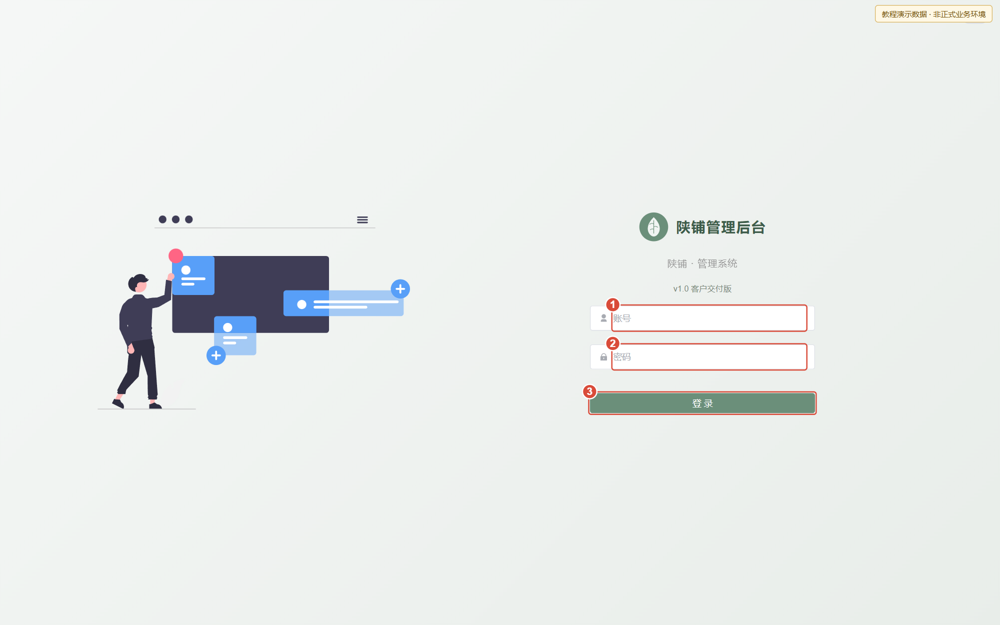
如果缺少“商品管理”菜单或“编辑”按钮，请联系交付负责人检查账号权限。
03｜修改小程序名称
| 名称 | 客户在哪里看到 | 由谁修改 |
|---|---|---|
| 微信官方小程序名称 | 微信搜索、最近使用的小程序、账号资料 | 小程序管理员在微信公众平台修改 |
| 页面店铺展示名和 Logo | 小程序首页、登录页及使用店铺配置的分享内容 | 超级管理员在店铺展示设置中修改，需使用支持该配置的小程序版本 |
| 构建名称与默认导航标题 | 应用配置和未单独设置标题的页面 | 维护人员更新并发布小程序版本 |
| 商品名称 | 商品列表、搜索、商品详情 | 运营人员在本后台编辑 |
小程序名称使用“陕铺”。应用名称和默认导航标题已设置为“陕铺”，更新后需重新发布小程序；微信官方名称由管理员在公众平台单独修改。
3.1 修改微信官方名称
- 请持有该小程序管理权限的人打开 微信公众平台。
- 登录对应的小程序账号；如果该账号管理多个小程序，先确认进入的是“陕铺”对应的账号。
- 进入账号设置，找到显示当前“小程序名称”的资料项。页面布局和修改入口以您登录后的微信页面为准。
- 如果当前名称已经是“陕铺”，只需核对；如果仍有“Test”等后缀，使用名称旁的修改入口，填写 陕铺。
- 按微信页面提示完成管理员确认或审核。能否修改、所需资料、次数和生效时间，以平台当前提示为准。
- 完成后重新打开账号资料核对名称，再用微信搜索或重新进入小程序检查显示。
找不到修改入口或名称未通过时，将页面提示发给小程序账号负责人处理。改名沿用原有 AppID。
3.2 应用内文字和“品牌管理”的区别
“内容管理 → 品牌管理”用于维护首页推荐品牌，例如“陕铺优选”。微信官方名称在公众平台维护。
页面上的店铺展示名与 Logo 由超级管理员进入“系统管理 → 店铺展示设置”修改：填写展示名，从素材库选择 Logo，点“保存设置”，重新进入页面核对。支持该配置的小程序版本重新打开后读取新内容。普通商品运营看不到该入口时，请联系指定管理员处理。
店铺展示设置不改变微信搜索中的官方名称，也不改变构建时名称和默认导航标题。
商品名称、价格和图片在商品编辑页修改，操作见下文。
04｜查找商品
入口：商品管理 → 商品列表。
- 在图中 ①商品名称 输入完整名称或一部分，例如“桂圆”。
- 点击 ②搜索。也可以选分类、状态缩小范围。
- 在结果中核对主图、商品名称、分类和当前售价，确认是目标商品。
- 点击这一行最右侧的 ③编辑，进入后核对名称和图片。如果按钮被挡住，拖动表格底部横向滚动条向右查看。
- 找不到商品时，先点击“重置”，清除之前的分类或状态条件，再搜索一次。
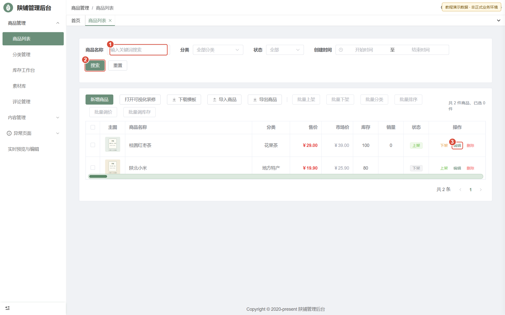
05｜改商品名称、分类、关键词和简介
进入商品编辑页顶部的“基础信息”。
- 在图中 ①商品名称 修改名称。例如将“桂圆红枣茶”改成“桂圆红枣茶 10袋装”。不要留空。
- 在 ②商品分类 选择合适分类。改完后，顾客会在对应分类中找这个商品。
- 商品类型一般保持原值；实体食品通常选择“实物商品”。
- 在“关键词”中选择或输入顾客可能搜索的词。建议使用与商品有关的词，例如“花果茶、茶饮、红枣”。
- 在 ③简介 写一两句简短说明，例如“独立小袋包装，日常冲泡方便”。
- 只改这些内容时，保留原价格、库存和规格。完成后按第09节保存。
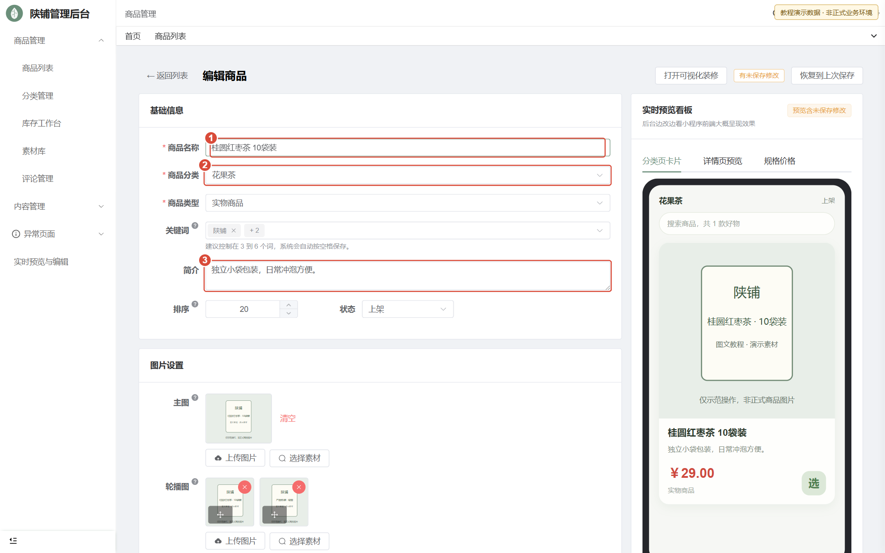
排序数值越大，商品通常越靠前；保留原值即可维持现有排序。
06｜改主图、轮播图和选择素材
向下滚动到“图片设置”。
| 图片种类 | 用途 | 如何选择 |
|---|---|---|
| 主图 | 商品列表中的封面 | 选清楚、完整的商品正面图 |
| 轮播图 | 商品详情顶部可左右滑动的图片 | 展示正面、背面、包装等不同角度 |
| 详情图 | 商品详情下方的长图说明 | 在下一节的“商品详情”区域添加 |
6.1 电脑上已有新图片
- 找到要替换的主图或轮播图区域，点击图中 ①上传图片。
- 在电脑文件窗口中选择图片并确认。
- 等到页面提示“上传成功”，并检查该区域已出现新图片。
- 主图一次展示一张；轮播图支持多张，可以按图片上的拖动手柄调整顺序。
- 图片上传完成后，点击“保存修改”，将新图保存到商品。
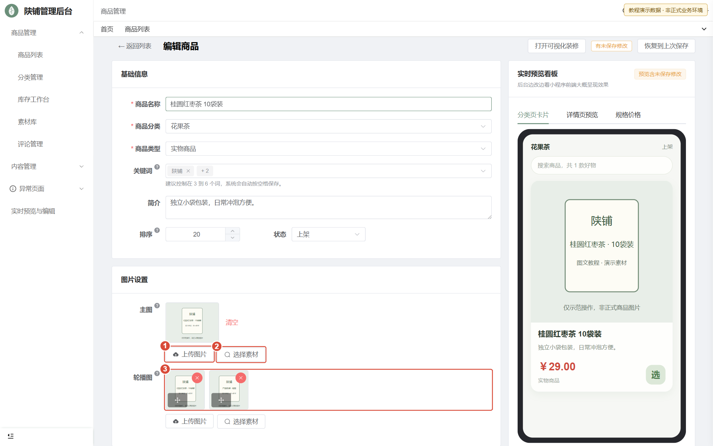
6.2 图片已在素材库中
- 点击图4中的 ②选择素材。
- 在弹窗图5的 ①搜索框 输入图片文件名的一部分，点“查询”。
- 点击 ②目标图片。选择主图时会带回图片并关闭窗口；选择轮播图或详情图时，可以继续选择其他图片。
- 多图选择完成后，点 ③完成，返回编辑页检查。
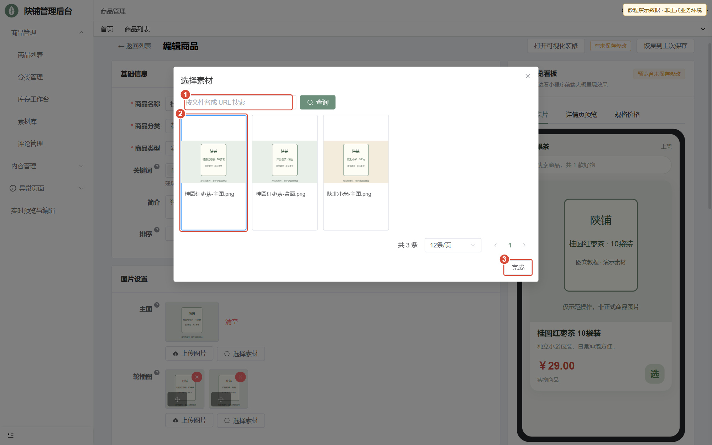
上传支持 JPG、PNG、WebP，单张不超过5MB。主图选用清晰、接近正方形的商品原图，避免使用聊天截图。
轮播图第一张放正面图，后面放细节和包装。点击图片右上角的叉号，可将该图从商品图片列表移除；调整后点击“保存修改”。
07｜改商品详情文字和详情图
向下找到“商品详情”。
- 在图中 ①详情内容 填写顾客需要了解的信息，如规格、配料、食用方式和保存方式。
- 图片在下方“详情图”区域添加：点击 ②上传图片 或 ③选择素材。
- 如有多张详情图，按顾客阅读顺序排列。
- 查看右侧“详情页预览”，检查文字和图片是否与目标商品对应。
- 继续核对价格和规格，再按第09节保存。
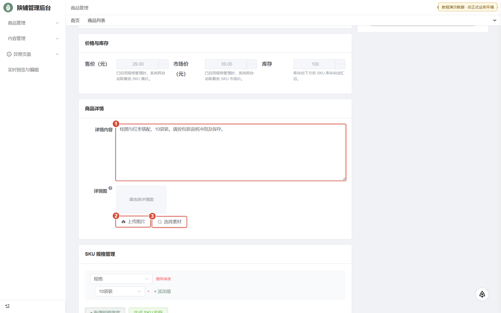
已有内容带网页标签时，保留原有格式；需要调整格式时，请联系维护人员。
08｜改售价、市场价和规格
8.1 商品规格与 SKU
“桂圆红枣茶”是一个商品；“10袋装”和“20袋装”是它的不同规格。后台把每种可售规格称为 SKU。每行规格可以有自己的价格、库存和图片。
标注“元”的价格框按人民币元填写。例如售价29.90元，填 29.90，不要填 2990。
8.2 已有商品改价
- 找到“价格与库存”和下方的 SKU 表格。
- 如果下方已有 SKU 行，逐行修改图中 ①价格（元），并核对上方显示的汇总价格。
- 如需展示市场价，填写合理的“市场价（元）”；填写时不要低于对应售价。
- 核对每个规格，尤其是同一商品有多个包装或容量时。
- 只调价时，保留图中 ②库存 和规格结构。点“保存修改”，重新进入检查。
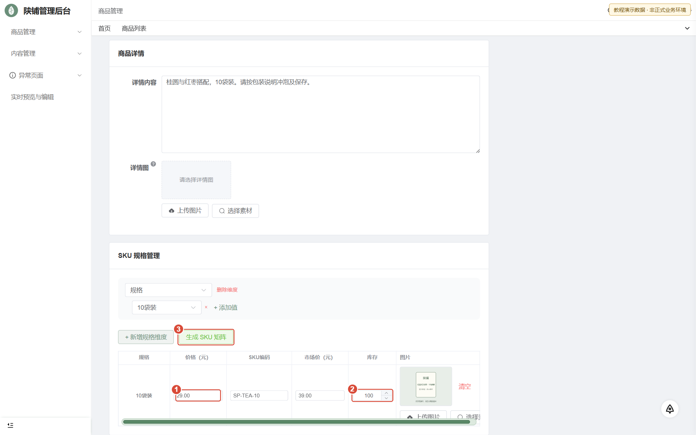
图中 ③生成 SKU 矩阵 用于新建或调整规格组合。只改名称、价格或图片时，保留原有规格维度和矩阵。
上方库存为各 SKU 的汇总时，输入框显示灰色，需要在对应规格行调整。日常到货和盘点可使用第10节的库存工作台。
09｜保存商品
- 核对名称、图片、分类、每个规格的价格、库存及上架状态。
- 向下滚动，点击图中 ①保存修改。
- 如果出现必填或价格、库存提示，留在当前页，按提示补齐后再保存。
- 保存后，页面返回商品列表，并提示“保存成功”。
- 再次点击该商品“编辑”，核对刚才的内容仍在。随后按第15节检查小程序效果。
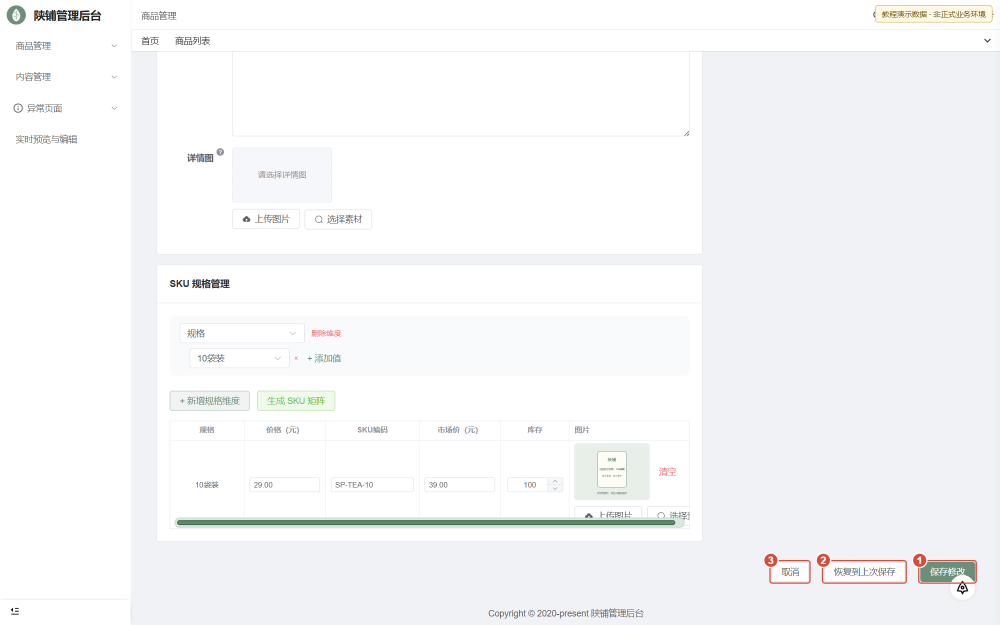
图8的 ②恢复到上次保存 用于撤销当前页尚未保存的修改；③取消 用于退出编辑。
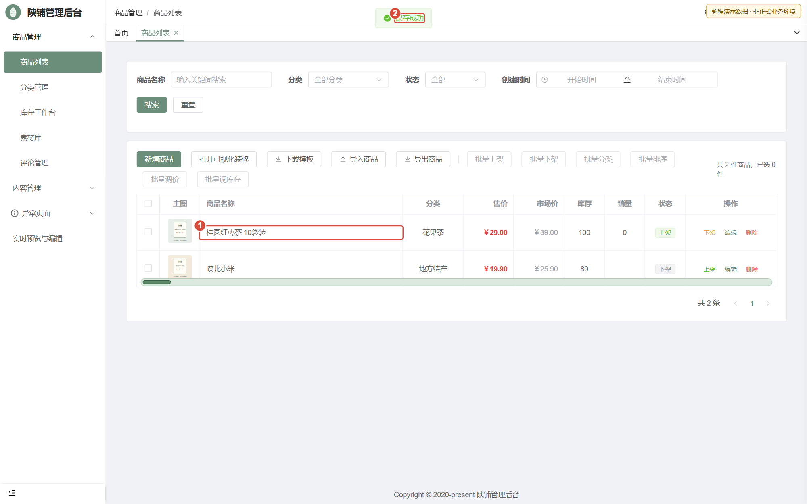
右侧预览会随输入变化。出现“有未保存修改”时，点击“保存修改”，成功后内容写入正式商品数据。装修页的“确认发布”是另一项操作，见第13节。
10｜到货补库存，或盘点减少库存
入口：商品管理 → 库存工作台。
- 在图11的 ①商品名称 搜索商品。
- 核对商品名、SKU编码和“规格”，确认要改的是哪一行。多个规格需要分别处理。
- 点击该行 ②调库存。
- 在图12的 ①调整数量 填写“增加或减少多少件”。
- 在 ②调整原因 填写真实原因，4至200个字符，例如“到货入库20件”。
- 检查数量和原因，点 ③确认调整。
- 返回列表核对新库存；需要追溯时，点图11的 ③流水。
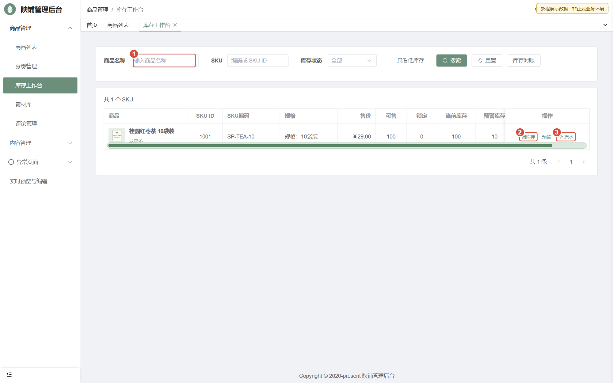
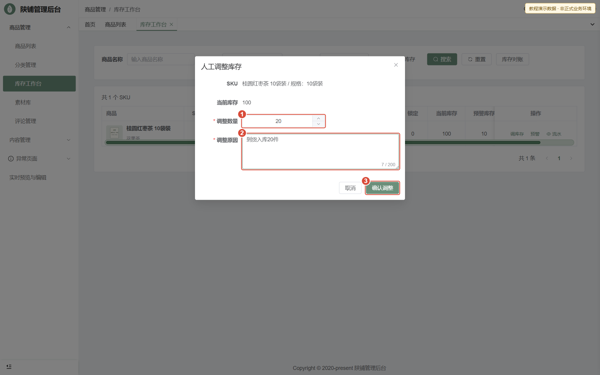
| 当前库存 | 操作 | 调整数量 | 调整后的库存 |
|---|---|---|---|
| 100件 | 新到20件 | 20 |
120件 |
| 100件 | 盘点少了5件 | -5 |
95件 |
| 100件 | 希望总数变成120件 | 20，不是120 |
120件 |
“可售”“锁定”和“当前库存”分别反映可购买数量、订单占用和库存记录。核对时先确认规格，再看可售数量；锁定数量按订单处理情况核对，不能直接作为盘亏扣减。
如果在商品编辑页直接改 SKU 库存，那里的“库存”填写的是该规格库存值；保存时同样要填写调整原因。它与库存工作台的“调整数量”含义不同。
11｜商品上下架
入口：商品管理 → 商品列表。
- 搜索目标商品并核对名称。
- 当前上架的商品，操作区显示“下架”；当前下架的商品显示“上架”。
- 点击对应操作，阅读确认框中的商品名称。
- 名称正确时点“确定”；不正确时点“取消”。
- 操作成功后核对“状态”列，再去小程序检查。
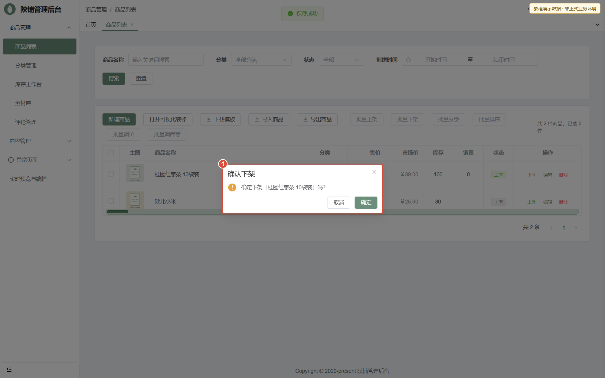
临时停售选择“下架”，保留商品信息。重新上架前检查主图、售价、规格和可售库存；校验未通过时，按提示补齐后重试。
12｜新增一个商品
入口：商品管理 → 商品列表 → 新增商品。
- 填写“商品名称”和“商品分类”，商品类型按实际选择。
- 补充简介和关键词。
- 新版默认是“下架”，保持下架录入，完成检查后再上架。旧截图中的“上架”不代表新版默认值。
- 上传主图，添加轮播图和详情说明。
- 如果只有一种规格，保持“单规格”，填写售价、市场价和库存。
- 如果有多种规格，打开“多规格”，选择规格名称，逐个填写规格值，点击“生成 SKU 矩阵”。
- 给每一行规格填写价格和库存。SKU编码是规格的识别码；如需后续导入更新，请使用稳定且不重复的编码。
- 点页面底部“创建商品”，等待“商品创建成功”。
- 重新进入商品核对；确认后，在列表点“上架”，再检查小程序。
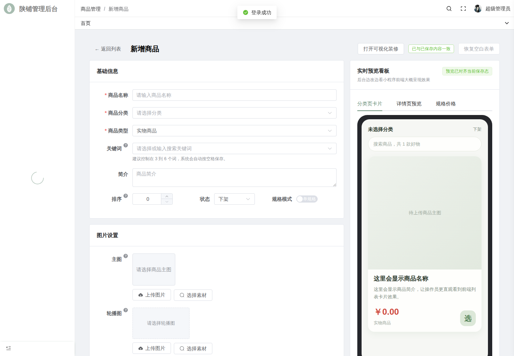
例如，规格名称选“净含量”，规格值填“250g”和“500g”，生成后会出现两行。分别填写并检查两行的价格和库存。
找不到合适分类时，联系分类负责人，或进入“商品管理 → 分类管理”新增分类，保存后回商品页面重新选择。
13｜更换首页图片、频道名称和推荐内容
入口：可视化装修 → 实时预览与编辑。
部分账号的左侧菜单会直接显示“实时预览与编辑”，点击该项即可。
左侧显示小程序预览，右侧显示选中内容的表单。点击带编辑标记的图片或卡片，即可在右侧修改；固定页面结构不支持直接编辑。
13.1 选择要修改的内容
- 在“首页预览”中，点击图14的 ①带“点此编辑”的大图或卡片。
- 左侧只显示部分内容时，点击对应区块 ②查看全部，再选择目标项目。
- 右侧 ③编辑面板 显示当前选中的内容；先核对名称，避免改错。
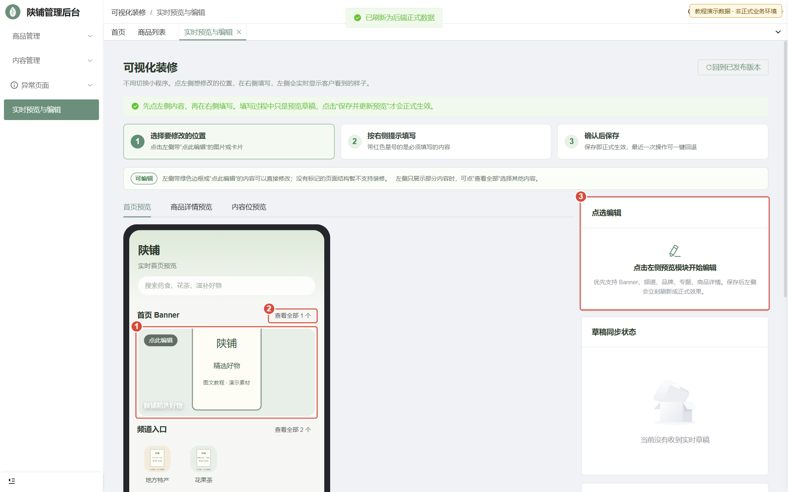
13.2 举例：更换首页大图（Banner）
- 点击左侧目标大图。
- 在图15的 ①标题 中填写 Banner 标题，便于在后台识别这张大图。
- 要更换顾客看到的画面，在“Banner 图片”点击上传或选择素材。图上的文字也要修改时，请先准备新的完整宣传图。
- 如需点图进入某商品，使用“跳转目标”控件选择对应商品或页面；不需要跳转时可以留空。
- 检查左侧草稿预览；有链接时可以点击“在预览中测试跳转”。
- 完成后按下一小节发布。
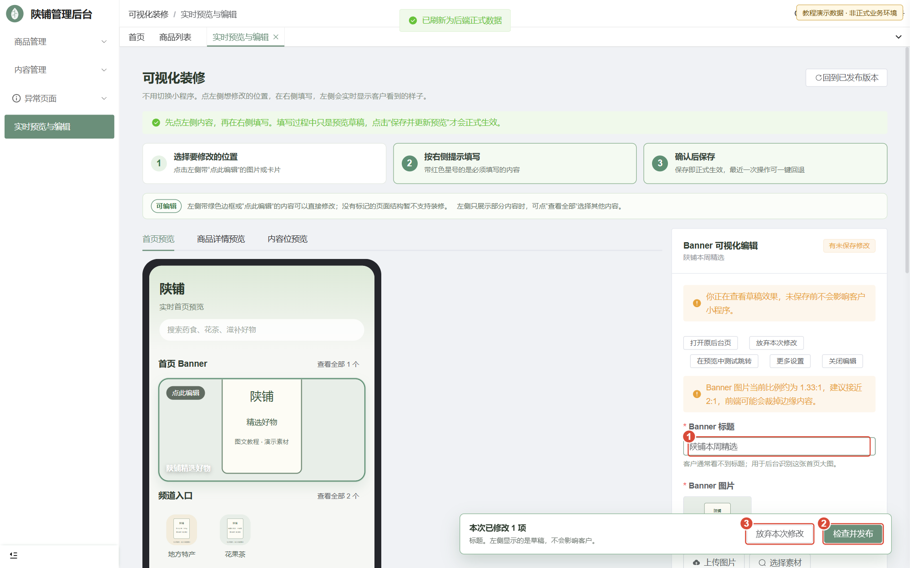
底部显示本次修改摘要，可在发布前核对修改项。
13.3 发布装修内容
- 点击图15底部 ②检查并发布。
- 查看“发布前检查”弹窗，核对这次修改的是哪个字段。
- 出现红色错误时，点击图16的 ①继续修改，按提示补齐。
- 出现图片比例、跳转等提醒时，逐项核对是否符合实际需求。
- 确认无误后点击图16的 ②确认发布。
- 等待发布成功提示，再去小程序重新进入对应页面检查。
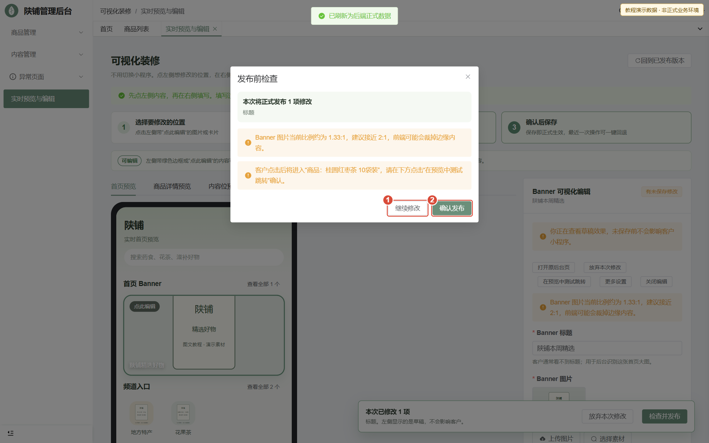
频道可修改名称、图标和跳转目标；推荐品牌可修改名称、图片和起售价；专题可修改标题、副标题、图片和价格说明。专题“价格说明”用于展示，关联商品的实际售价按第08节单独修改。
新增首页大图、频道、品牌或专题时，进入“内容管理”下对应页面，点击新增并保存，再回装修页核对。需要在图片上展示标题或商品名时，先准备带有相应文字的图片再上传。
14｜撤销修改与回退
14.1 还没有保存或发布
- 商品编辑页： 点“恢复到上次保存”，撤回本页尚未保存的改动。新建商品页对应按钮是“恢复空白表单”。
- 可视化装修： 点底部“放弃本次修改”；要重新读取正式数据，使用页面右上角“回到已发布版本”。
- 不确定当前是否保存成功时，先重新进入目标商品核对，不要连续多次提交。
14.2 已经保存或发布
- 进入“可视化装修 → 实时预览与编辑”。
- 在右侧向下找到“商品一键回退”或“内容一键回退”。
- 先核对操作名称、商品或内容名称、时间，确认记录就是您要撤销的那次操作。
- 点击对应的“一键回退”，阅读确认提示后再确认。
- 回到原页面和小程序重新检查结果。
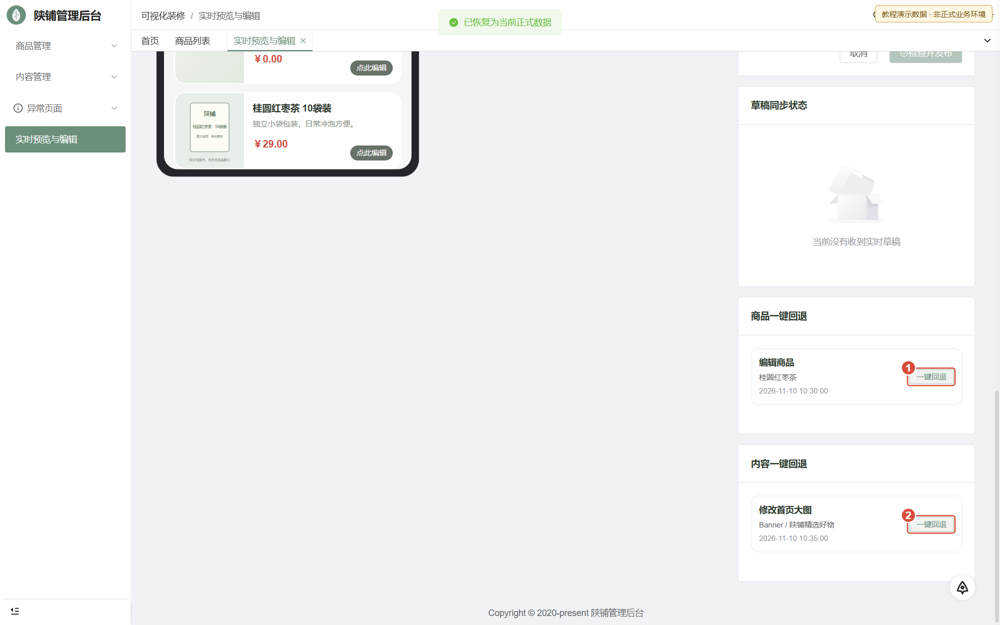
可回退范围以面板列出的记录为准。没有对应记录时，重新编辑正确值或联系负责人；其他历史操作、图片删除和库存流水等需另行核对处理。
商品回退只恢复允许的展示信息，不恢复历史价格、库存和销量，也不会恢复已删除商品。规格集合已经变化时会拒绝回退，请手动核对。改价回到商品编辑页操作；库存通过库存工作台调整并填写原因，不能用回退把已售出的库存补回来。
15｜检查小程序显示
本节适用于负责人已通知开放商城的阶段。商品录入阶段先检查后台保存结果与预览，暂时无法访问微信端不表示资料保存失败。
- 用微信重新进入“陕铺”小程序，打开刚修改商品所在的页面；必要时下拉刷新或退出后重新进入。
- 搜索新名称，检查商品及所属分类。
- 查看列表主图，进入详情后左右滑动轮播图，再向下查看详情图片。
- 打开规格选择，逐个核对不同规格的价格，并与列表起售价比对。
- 检查对应规格的购买状态；下架商品应停止作为在售商品展示。
- 如果装修页正常、小程序没有变化，先确认“确认发布”是否成功，以及登录的后台是否与当前小程序属于同一套环境。
显示效果在商品页面和规格选择中检查即可。如需交易测试，使用负责人指定的测试方式。
16｜常见问题
| 看到的现象 | 先做什么 | 仍未解决时 |
|---|---|---|
| 登录提示账号或密码错误 | 检查大小写、空格和是否使用分配账号 | 请负责人重置密码 |
| 登录或打开页面提示“系统异常” | 记录发生时间、页面和提示，刷新一次 | 联系技术负责人检查服务 |
| 看不到某个菜单或编辑按钮 | 确认账号与负责人提供的一致 | 请负责人检查角色权限 |
| 搜索不到商品 | 点“重置”，去掉分类、状态条件后再搜 | 核对是否进入正确后台环境 |
| 改了预览，顾客看不到 | 商品页点“保存修改”；装修页完成“确认发布” | 重新进入小程序，核对环境 |
| 图片上传失败 | 检查JPG/PNG/WebP格式、单张不超过5MB | 换一张正常图片重试，并保留报错 |
| 上架时提示缺主图或价格不合法 | 按提示补主图、售价、规格和库存 | 联系负责人核对商品资料 |
| 库存变化后不能保存 | 填写4至200个字符的真实调整原因 | 核对是否选对规格和调整数量 |
| 名称重复或跳转目标冲突 | 阅读提示指出的对象，修改本次冲突项 | 请内容负责人确认保留哪一项 |
| 表格右侧按钮看不到 | 拖动表格底部横向滚动条向右 | 将浏览器缩放恢复到100%后再看 |
| 微信里仍是旧小程序名称 | 请管理员核对微信公众平台账号名称 | 检查平台提示及新版本发布状态 |
反馈问题时，写明页面、操作、发生时间、完整提示、商品名称及规格，以及已经尝试的处理方式，并附上提示截图。反馈内容不包含账号密码。
17｜开通客户账号与权限
由交付负责人在正式后台创建账号并分配权限。
- 进入“系统管理 → 角色权限”，查看现有角色是否适合商品运营。
- 需要商品编辑时，授予商品管理的查看、维护能力；需要上传或选图时，包含素材查看和素材维护能力。
- 需要客户自己改首页大图、频道和专题时，再授予内容查看和内容维护能力。
- 在“系统管理 → 管理员账号”创建或选择该客户人员的账号，分配对应角色并启用。
- 用该账号重新登录，确认能看到商品列表、素材库，以及按需开放的可视化装修入口。
- 正式后台网址、账号和初始密码由负责人单独交给指定使用者。
“商品维护”权限同时包含新增、上下架、删除和批量操作。若只开放名称等指定字段，交付前需由维护人员拆分权限。
微信公众平台的管理权限单独分配，官方小程序改名由对应管理员操作。
18｜维护后检查
- 确认改的是正确商品与规格。
- 名称、分类、图片与详情内容一致。
- 价格按“元”填写，每个规格都已检查。
- 库存增减数量正确，调整原因清楚。
- 上下架状态符合本次目的。
- 已看到保存或发布成功提示。
- 重新进入后台页面核对；商城开放后，再检查微信小程序展示。
如果需要把教程发给其他人，请发送整个教程文件夹的压缩包，保留其中的“images”图片文件夹；只发HTML文件会导致截图缺失。